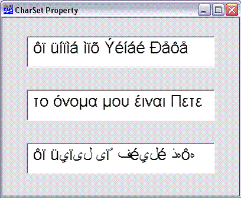

| Applies To: | Font |
Description
This property applies to the Classic Edition only. In the Unicode Edition, its value is ignored.
CharSet is an integer that specifies the character encoding of the Font object.
The following table illustrates some of the character set encodings supported by Windows. Note that this set may vary according to the edition of Windows that is installed.
| Language | CharSet |
|---|---|
| Western (Ansi) | 0 |
| Hebrew | 177 |
| Arabic | 178 |
| Greek | 161 |
| Turkish | 162 |
| Baltic | 186 |
| Central European | 238 |
| Cyrillic | 204 |
| Vietnamese | 163 |
Windows fonts typically contain glyphs for the ASCII character set in their first 128 positions, and glyphs for the Western European character set in positions 129-256. Additional sets of character glyphs are stored in positions 257 onwards in what are sometimes referred to as codepages.
When you change the character set encoding, to (say) Greek (161), the set of Greek characters are mapped into the top 128 positions of the font.
For example, if the CharSet is 0 (ANSI), the character code Hex EC is displayed as ì (i-grave). However, if you change CharSet to 161 (Greek), the same character code is displayed as the Greek µ.
The following example illustrates how the character string 'ôï üíïìá ìïõ Ýéíáé Ðåôå' appears differently according to the value of CharSet.

'F'⎕WC'FORM' 'CharSet Property'('Size' 300 400)('Coord' 'Pixel')
F.Coord←'Prop'
'F.F1'⎕WC'Font' ('Size' 32) ('CharSet' 0)
'F.F2'⎕WC'Font' ('Size' 32) ('CharSet' 161)
'F.F3'⎕WC'Font' ('Size' 32) ('CharSet' 178)
STRING←'ôï üíïìá ìïõ Ýéíáé Ðåôå'
'F.E1'⎕WC'Edit'STRING(10 10)(⍬ 80)('Font' 'F.F1')
'F.E2'⎕WC'Edit'STRING(40 10)(⍬ 80)('Font' 'F.F2')('Translate' 'ANSI')
'F.E3'⎕WC'Edit'STRING(70 10)(⍬ 80)('Font' 'F.F3')('Translate' 'ANSI')Note that setting Translate to 'ANSI' means that characters entered into the Edit fields using a corresponding National Language keyboard (Greek and Arabic) will appear in that language as intended